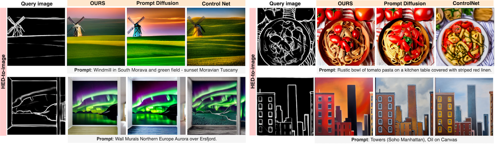

We propose Context Diffusion, a diffusion-based framework that enables image generation models to learn from visual examples presented in context.
Recent work tackles such in-context learning for image generation, where a query image is provided alongside context examples and text prompts. However, the quality and fidelity of the generated images deteriorate when the prompt is not present, demonstrating that these models are unable to truly learn from the visual context. To address this, we propose a novel framework that separates the encoding of the visual context and preserving the structure of the query images. This results in the ability to learn from the visual context and text prompts, but also from either one of them.
Furthermore, we enable our model to handle few-shot settings, to effectively address diverse in-context learning scenarios. Our experiments and user study demonstrate that Context Diffusion excels in both in-domain and out-of-domain tasks, resulting in an overall enhancement in image quality and fidelity compared to counterpart models.
Architecture. Context Diffusion framework consists of a Latent Diffusion Model (LDM) backbone and frozen Vision and Text encoders. The core of the framework is encoding the conditioning information: the visual context encompassing k-images and the text prompt. The visual control image, i.e. the query image serves to define the structure of the output, similarly to ControlNet.
Modified cross-attention. The visual and textual conditioning should be at the same level to enable balanced learning. Therefore we extract their features using pre-trained vision and text encoders and inject the concatenated representation into the LDM backbone via cross-attention.
Training & Inference. Context Diffusion is trained using {HED, segmentation, depth}-to-image tasks and vice versa. At inference time, we use the test partition to test the ability to handle various in-domain tasks. We consider additonal out-of-domain tasks such as: image editing, canny edges, scribbles, normal maps and hand-drawn sketches.
Context Diffusion handles in-domain tasks by leveraging visual signals from the context examples alongside the text prompts.
Context Diffusion generalizes to out-of-domain (unseen query images during training), by learning from both the context and prompts.
Context Diffusion also handles image editing, by using a real image as a query and generating its edited version.
Context Diffusion is able to learn cues from the context, both with and without text prompts, showing its true in-context learning abilities.
Context Diffusion generates better quality images by accurately leveraging cues from the context combined with the prompt.
Context Diffusion achieves better visual context fidelity, unlike previous work which overly relies on the text guidance.
Context Diffusion also handles zero-shot scenarios, when visual context examples are not given.
Context Diffusion architecture is flexible enough to accommodate multiple context examples. Augmenting the context sequence with additional examples, helps to enrich the visual representation, especially for out-of-domain tasks, such as editing.
Context Diffusion handles also few-shot examples for sketch-to-image generation. More image examples help in generating images with better context fidelity.
@article{najdenkoska2023context,
title={Context Diffusion: In-Context Aware Image Generation},
author={Najdenkoska, Ivona and Sinha, Animesh and Dubey, Abhimanyu and Mahajan, Dhruv and Ramanathan, Vignesh and Radenovic, Filip},
journal={arXiv preprint arXiv:2312.03584},
year={2023}
}